| 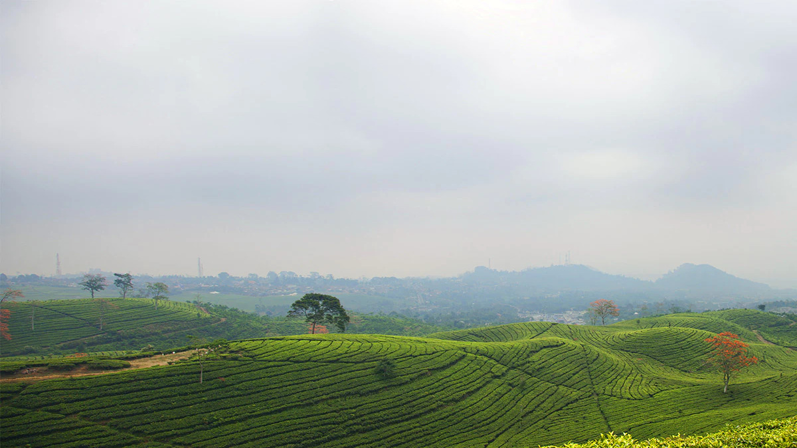 | 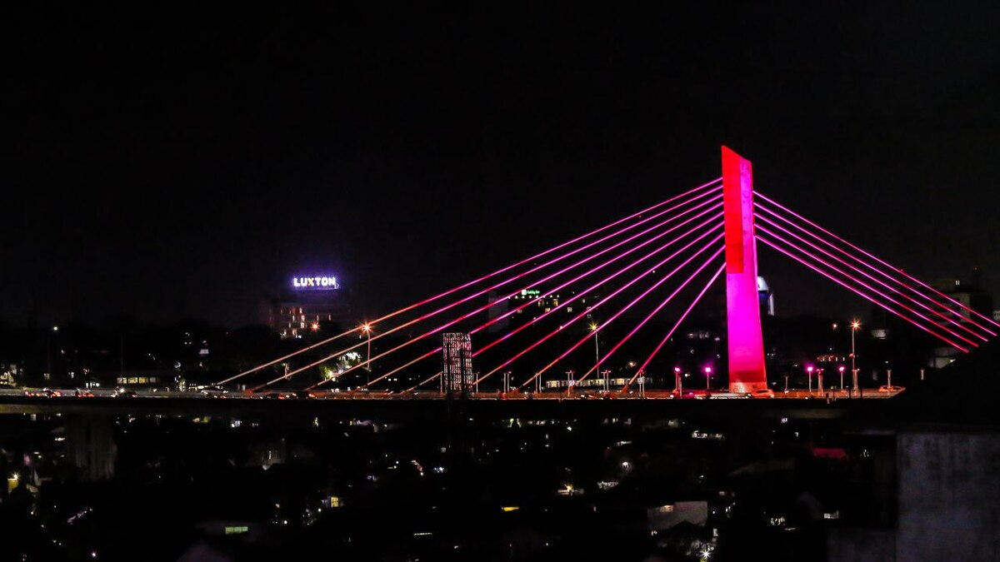 | 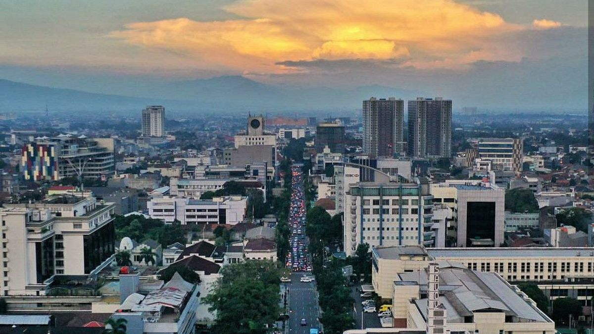 | 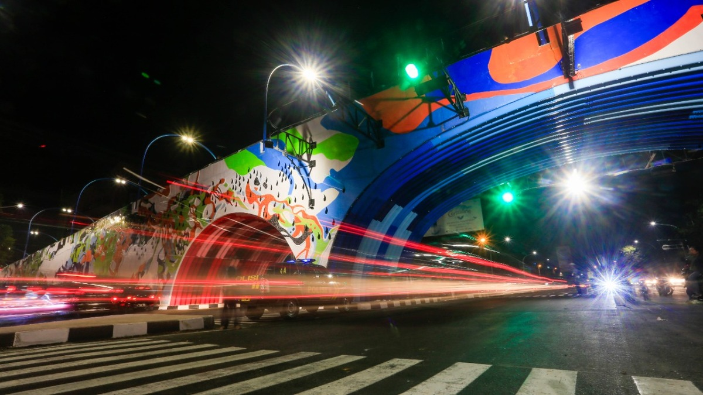 |
Bandung City the capital city of Indonesian province of West Java. Bandung is the fourth most populous city in Indonesia with 2,452,943 population in mid 2021. Bandung also called as Parijs van Java, because many luxurious hotels, restaurants, cafes, and European boutiques were open during the Dutch colonial period.
|
| 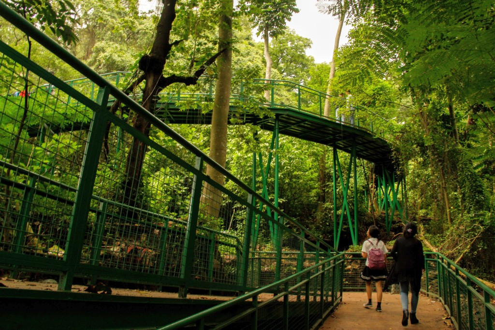 |
| 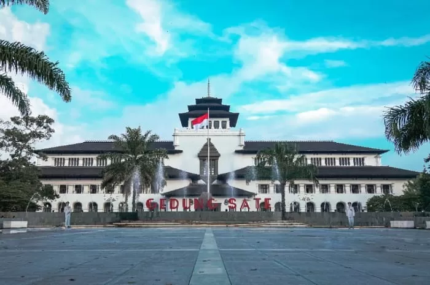 |
| 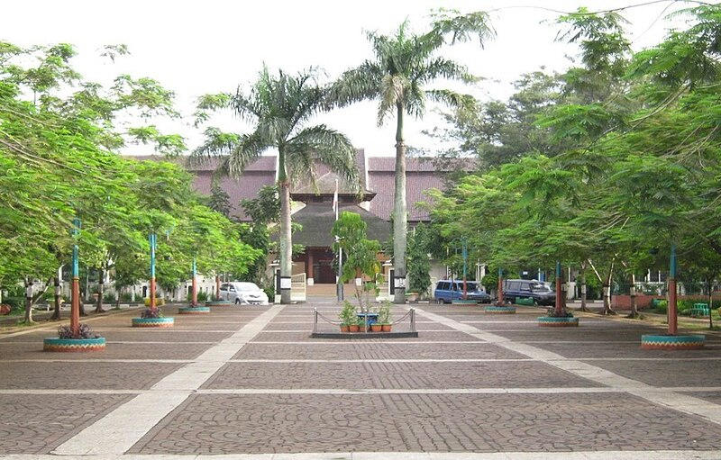 | Cimahi city is a city located immediately west of the larger city of Bandung, in West Java Province, Indonesia and within the Bandung Metropolitan Area. It had a population at the 2021 Census of 571,632. The city is a major textile producer and is home to several military training centres. |
| 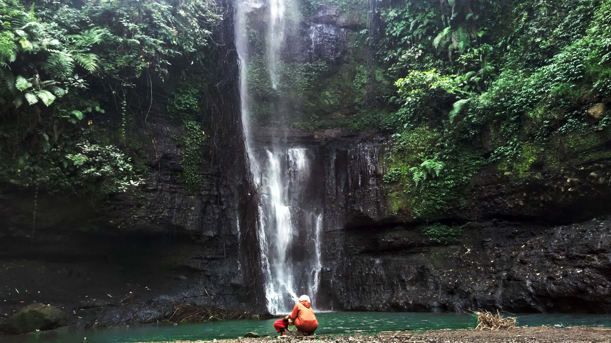 |
| 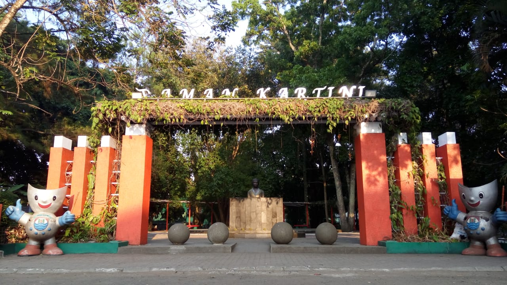 |
| 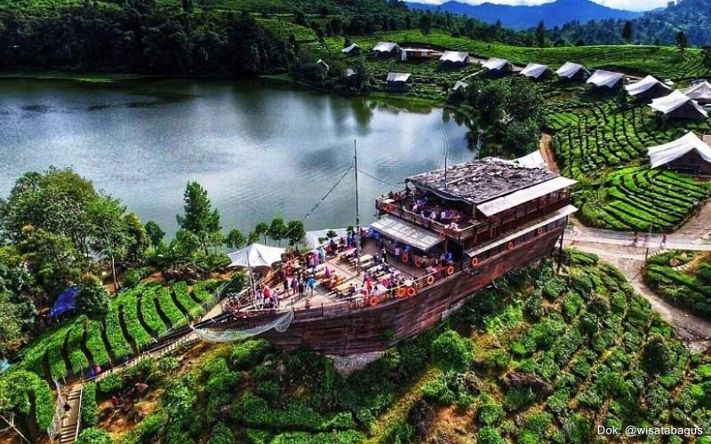 | Bandung Regency is an administrative landlocked regency located to the south, southeast, east and northeast of the city of Bandung. Soreang is the capital of this region.
In mid 2021, the population has reached 3,666,156 inhabitants with 31 districts. Baleendah is the most populous district in this region.
|
| 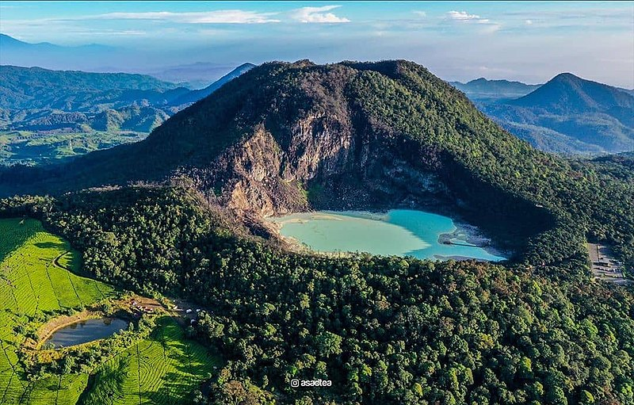 |
| 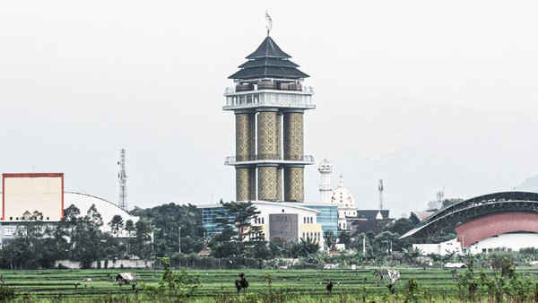 |
West Bandung Regency was a part of the Bandung Regency, then became the West Bandung Regency in 2007 with Ngamprah as it capital city.
In 2021, this region reached 1,780,767 inhabitants with Lembang as the most populous district and tourist attraction.
|
| 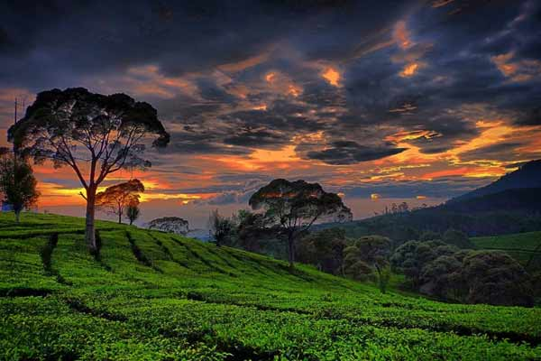 |
| 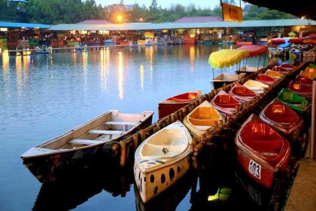 |
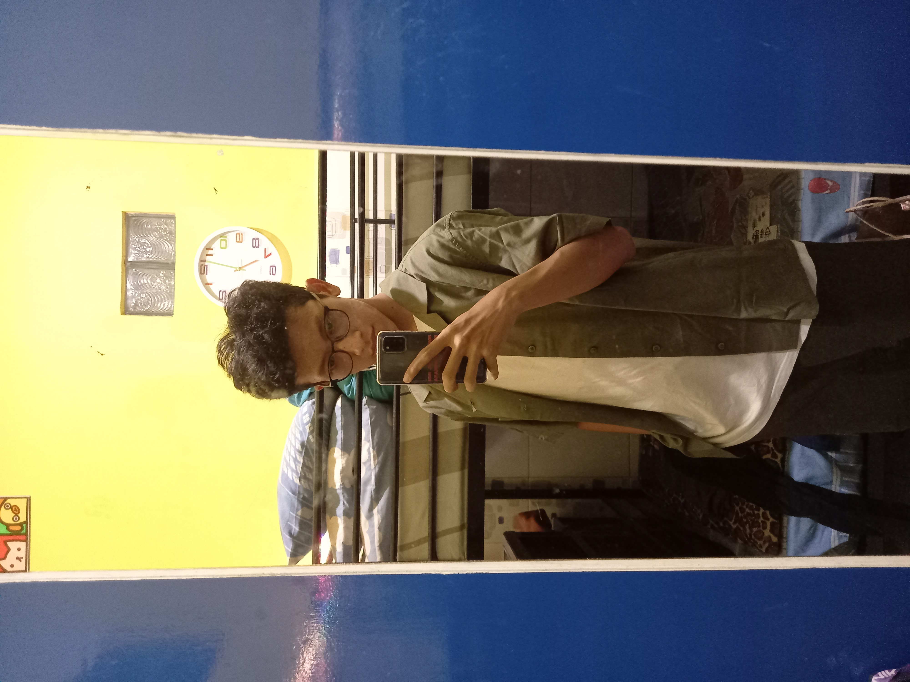
Muhammad Raffy Abdillah
10122099
IF-3